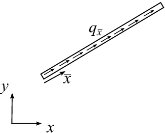

Bar element functions¶
1D Bar elements¶
bar1e¶
- Purpose:
Compute element stiffness matrix for a one dimensional bar element.

- Syntax:
Ke = bar1e(ex, ep) [Ke, fe] = bar1e(ex, ep, eq)- Description:
bar1eprovides the element stiffness matrixKefor a one dimensional bar element. The input variables\[\text{ex} = [x_1 \;\; x_2] \qquad \text{ep} = [E \; A]\]supply the element nodal coordinates \(x_1\) and \(x_2\), the modulus of elasticity \(E\), and the cross section area \(A\).
The element load vector
fecan also be computed if a uniformly distributed load is applied to the element. The optional input variable\[\text{eq} = [q_{\bar{x}}]\]contains the distributed load per unit length, \(q_{\bar{x}}\).

- Theory:
The element stiffness matrix \(\bar{\mathbf{K}}^e\), stored in
Ke, is computed according to\[\begin{split}\bar{\mathbf{K}}^e = \frac{D_{EA}}{L} \begin{bmatrix} 1 & -1 \\ -1 & 1 \end{bmatrix}\end{split}\]where the axial stiffness \(D_{EA}\) and the length \(L\) are given by
\[D_{EA} = EA; \quad L = x_2 - x_1\]The element load vector \(\bar{\mathbf{f}}_l^e\), stored in
fe, is computed according to\[\begin{split}\bar{\mathbf{f}}_l^e = \frac{q_{\bar{x}} L}{2} \begin{bmatrix} 1 \\ 1 \end{bmatrix}\end{split}\]
bar1s¶
- Purpose:
Compute normal force in a one dimensional bar element.

- Syntax:
es = bar1s(ex, ep, ed) es = bar1s(ex, ep, ed, eq) [es, edi] = bar1s(ex, ep, ed, eq, n) [es, edi, eci] = bar1s(ex, ep, ed, eq, n)- Description:
bar1scomputes the normal force in the one dimensional bar elementbar1e.The input variables
exandepare defined inbar1eand the element nodal displacements, stored ined, are obtained by the functionextract. If distributed load is applied to the element, the variableeqmust be included.The number of evaluation points for normal force and displacement are determined by
n. Ifnis omitted, only the ends of the bar are evaluated.The output variables
\[\begin{split}\mathrm{es} = \begin{bmatrix} N(0) \\ N(\bar{x}_2) \\ \vdots \\ N(\bar{x}_{n-1}) \\ N(L) \end{bmatrix} \qquad \mathrm{edi} = \begin{bmatrix} u(0) \\ u(\bar{x}_2) \\ \vdots \\ u(\bar{x}_{n-1}) \\ u(L) \end{bmatrix} \qquad \mathrm{eci} = \begin{bmatrix} 0 \\ \bar{x}_2 \\ \vdots \\ \bar{x}_{n-1} \\ L \end{bmatrix}\end{split}\]contain the normal force, the displacement, and the evaluation points on the local \(\bar{x}\)-axis. \(L\) is the length of the bar element.
- Theory:
The nodal displacements in local coordinates are given by
\[\begin{split}\mathbf{\bar{a}}^e = \begin{bmatrix} \bar{u}_1 \\ \bar{u}_2 \end{bmatrix}\end{split}\]The transpose of \(\mathbf{\bar{a}}^e\) is stored in
ed.The displacement \(u(\bar{x})\) and the normal force \(N(\bar{x})\) are computed from
\[u(\bar{x}) = \mathbf{N} \mathbf{\bar{a}}^e + u_p(\bar{x})\]\[N(\bar{x}) = D_{EA} \mathbf{B} \mathbf{\bar{a}}^e + N_p(\bar{x})\]where
\[\mathbf{N} = \begin{bmatrix} 1 & \bar{x} \end{bmatrix} \mathbf{C}^{-1} = \begin{bmatrix} 1 - \frac{\bar{x}}{L} & \frac{\bar{x}}{L} \end{bmatrix}\]\[\mathbf{B} = \begin{bmatrix} 0 & 1 \end{bmatrix} \mathbf{C}^{-1} = \frac{1}{L} \begin{bmatrix} -1 & 1 \end{bmatrix}\]\[u_p(\bar{x}) = -\frac{q_{\bar{x}}}{D_{EA}} \left( \frac{\bar{x}^2}{2} - \frac{L\bar{x}}{2} \right)\]\[N_p(\bar{x}) = -q_{\bar{x}} \left( \bar{x} - \frac{L}{2} \right)\]in which \(D_{EA}\), \(L\), and \(q_{\bar{x}}\) are defined in
bar1eand\[\begin{split}\mathbf{C}^{-1} = \begin{bmatrix} 1 & 0 \\ -\frac{1}{L} & \frac{1}{L} \end{bmatrix}\end{split}\]
bar1we¶
- Purpose:
Compute element stiffness matrix for a one dimensional bar element with elastic support.

- Syntax:
Ke = bar1we(ex, ep) [Ke, fe] = bar1we(ex, ep, eq)- Description:
bar1weprovides the element stiffness matrixKefor a one dimensional bar element with elastic support.The input variables
\[\mathrm{ex} = [x_1\;\; x_2] \qquad \mathrm{ep} = [E\; A\; k_{\bar{x}}]\]supply the element nodal coordinates \(x_1\) and \(x_2\), the modulus of elasticity \(E\), the cross section area \(A\) and the stiffness of the axial springs \(k_{\bar{x}}\).
The element load vector
fecan also be computed if a uniformly distributed load is applied to the element.The optional input variable
\[\mathrm{eq} = [q_{\bar{x}}]\]then contains the distributed load per unit length, \(q_{\bar{x}}\).
Bar element with distributed load
- Theory:
The element stiffness matrix \(\bar{\mathbf{K}}^e\), stored in
Ke, is computed according to\[\bar{\mathbf{K}}^e = \bar{\mathbf{K}}^e_0 + \bar{\mathbf{K}}^e_s\]where
\[\begin{split}\bar{\mathbf{K}}^e_0 = \frac{D_{EA}}{L} \begin{bmatrix} 1 & -1 \\ -1 & 1 \end{bmatrix}\end{split}\]\[\begin{split}\bar{\mathbf{K}}^e_s = k_{\bar{x}} L \begin{bmatrix} \frac{1}{3} & \frac{1}{6} \\ \frac{1}{6} & \frac{1}{3} \end{bmatrix}\end{split}\]where the axial stiffness \(D_{EA}\) and the length \(L\) are given by
\[D_{EA} = EA; \qquad L = x_2 - x_1\]The element load vector \(\bar{\mathbf{f}}_l^e\), stored in
fe, is computed according to\[\begin{split}\bar{\mathbf{f}}_l^e = \frac{q_{\bar{x}} L}{2} \begin{bmatrix} 1 \\ 1 \end{bmatrix}\end{split}\]
bar1ws¶
- Purpose:
Compute normal force in a one dimensional bar element with elastic support.
- Syntax:
es = bar1ws(ex, ep, ed) es = bar1ws(ex, ep, ed, eq) [es, edi] = bar1ws(ex, ep, ed, eq, n) [es, edi, eci] = bar1ws(ex, ep, ed, eq, n)- Description:
bar1wscomputes the normal force in the one dimensional bar elementbar1we.The input variables
exandepare defined inbar1weand the element nodal displacements, stored ined, are obtained by the functionextract. If distributed load is applied to the element, the variableeqmust be included.The number of evaluation points for normal force and displacement are determined by
n. Ifnis omitted, only the ends of the bar are evaluated.The output variables are:
\[\begin{split}\mathrm{es} = \begin{bmatrix} N(0) \\ N(\bar{x}_2) \\ \vdots \\ N(\bar{x}_{n-1}) \\ N(L) \end{bmatrix} \qquad \mathrm{edi} = \begin{bmatrix} u(0) \\ u(\bar{x}_2) \\ \vdots \\ u(\bar{x}_{n-1}) \\ u(L) \end{bmatrix} \qquad \mathrm{eci} = \begin{bmatrix} 0 \\ \bar{x}_2 \\ \vdots \\ \bar{x}_{n-1} \\ L \end{bmatrix}\end{split}\]These contain the normal force, the displacement, and the evaluation points on the local \(\bar{x}\)-axis. \(L\) is the length of the bar element.
- Theory:
The nodal displacements in local coordinates are given by
\[\begin{split}\mathbf{\bar{a}}^e = \begin{bmatrix} \bar{u}_1 \\ \bar{u}_2 \end{bmatrix}\end{split}\]The transpose of \(\mathbf{\bar{a}}^e\) is stored in
ed.The displacement \(u(\bar{x})\) and the normal force \(N(\bar{x})\) are computed from
\[u(\bar{x}) = \mathbf{N} \mathbf{\bar{a}}^e + u_p(\bar{x})\]\[N(\bar{x}) = D_{EA} \mathbf{B} \mathbf{\bar{a}}^e + N_p(\bar{x})\]where
\[\mathbf{N} = \begin{bmatrix} 1 & \bar{x} \end{bmatrix} \mathbf{C}^{-1} = \begin{bmatrix} 1 - \frac{\bar{x}}{L} & \frac{\bar{x}}{L} \end{bmatrix}\]\[\mathbf{B} = \begin{bmatrix} 0 & 1 \end{bmatrix} \mathbf{C}^{-1} = \frac{1}{L} \begin{bmatrix} -1 & 1 \end{bmatrix}\]\[u_p(\bar{x}) = \frac{k_{\bar{x}}}{D_{EA}} \left[ \frac{\bar{x}^2 - L\bar{x}}{2} \quad \frac{\bar{x}^3 - L^2\bar{x}}{6} \right] \mathbf{C}^{-1} \mathbf{\bar{a}}^e - \frac{q_{\bar{x}}}{D_{EA}} \left( \frac{\bar{x}^2}{2} - \frac{L\bar{x}}{2} \right)\]\[N_p(\bar{x}) = k_{\bar{x}} \left[ \frac{2\bar{x} - L}{2} \quad \frac{3\bar{x}^2 - L^2}{6} \right] \mathbf{C}^{-1} \mathbf{\bar{a}}^e - q_{\bar{x}} \left( \bar{x} - \frac{L}{2} \right)\]in which \(D_{EA}\), \(L\), \(k_{\bar{x}}\) and \(q_{\bar{x}}\) are defined in
bar1weand\[\begin{split}\mathbf{C}^{-1} = \begin{bmatrix} 1 & 0 \\ -\frac{1}{L} & \frac{1}{L} \end{bmatrix}\end{split}\]
2D bar elements¶
bar2e¶
- Purpose:
Compute element stiffness matrix for a two dimensional bar element.

- Syntax:
Ke = bar2e(ex, ey, ep) [Ke, fe] = bar2e(ex, ey, ep, eq)- Description:
bar2eprovides the global element stiffness matrixKefor a two dimensional bar element.The input variables
\[\begin{split}\begin{array}{l} \mathrm{ex} = [\, x_1 \;\; x_2 \,] \\ \mathrm{ey} = [\, y_1 \;\; y_2 \,] \end{array} \qquad \mathrm{ep} = [\, E \; A \,]\end{split}\]supply the element nodal coordinates \(x_1\), \(y_1\), \(x_2\), and \(y_2\), the modulus of elasticity \(E\), and the cross section area \(A\).
The element load vector
fecan also be computed if a uniformly distributed axial load is applied to the element. The optional input variable\[\mathrm{eq} = [\, q_{\bar{x}} \,]\]then contains the distributed load per unit length, \(q_{\bar{x}}\).
 - Theory:
The element stiffness matrix \(\mathbf{K}^e\), stored in
Ke, is computed according to\[\mathbf{K}^e = \mathbf{G}^T \; \bar{\mathbf{K}}^e \; \mathbf{G}\]where
\[\begin{split}\bar{\mathbf{K}}^e = \frac{D_{EA}}{L} \begin{bmatrix} 1 & -1 \\ -1 & 1 \end{bmatrix} \qquad \mathbf{G} = \begin{bmatrix} n_{x\bar{x}} & n_{y\bar{x}} & 0 & 0 \\ 0 & 0 & n_{x\bar{x}} & n_{y\bar{x}} \end{bmatrix}\end{split}\]where the axial stiffness \(D_{EA}\) and the length \(L\) are given by
\[D_{EA} = EA; \qquad L = \sqrt{(x_2 - x_1)^2 + (y_2 - y_1)^2}\]and the transformation matrix \(\mathbf{G}\) contains the direction cosines
\[n_{x\bar{x}} = \frac{x_2 - x_1}{L} \qquad n_{y\bar{x}} = \frac{y_2 - y_1}{L}\]The element load vector \(\mathbf{f}_l^e\), stored in
fe, is computed according to\[\mathbf{f}_l^e = \mathbf{G}^T \; \bar{\mathbf{f}}_l^e\]where
\[\begin{split}\bar{\mathbf{f}}_l^e = \frac{q_{\bar{x}} L}{2} \begin{bmatrix} 1 \\ 1 \end{bmatrix}\end{split}\]
{kind=link}
bar2s¶
- Purpose:
Compute normal force in a two dimensional bar element.

- Syntax:
es = bar2s(ex, ey, ep, ed) es = bar2s(ex, ey, ep, ed, eq) [es, edi] = bar2s(ex, ey, ep, ed, eq, n) [es, edi, eci] = bar2s(ex, ey, ep, ed, eq, n)- Description:
bar2scomputes the normal force in the two dimensional bar elementbar2e.The input variables
ex,ey, andepare defined inbar2eand the element nodal displacements, stored ined, are obtained by the functionextract. If distributed loads are applied to the element, the variableeqmust be included. The number of evaluation points for section forces and displacements are determined byn. Ifnis omitted, only the ends of the bar are evaluated.The output variables
\[\begin{split}\mathrm{es} = \begin{bmatrix} N(0) \\ N(\bar{x}_{2})\\ \vdots \\ N(\bar{x}_{n-1})\\ N(L) \end{bmatrix} \qquad \mathrm{edi} = \begin{bmatrix} u(0) \\ u(\bar{x}_{2})\\ \vdots \\ u(\bar{x}_{n-1})\\ u(L) \end{bmatrix} \qquad \mathrm{eci} = \begin{bmatrix} 0 \\ \bar x_{2} \\ \vdots \\ \bar x_{n-1} \\ L \end{bmatrix}\end{split}\]contain the normal force, the displacement, and the evaluation points on the local \(\bar{x}\)-axis. \(L\) is the length of the bar element.
- Theory:
The nodal displacements in global coordinates
\[\mathbf{a}^e = \begin{bmatrix} u_1 & u_2 & u_3 & u_4 \end{bmatrix}^T\]are also shown in
bar2e. The transpose of \(\mathbf{a}^e\) is stored ined.The nodal displacements in local coordinates are given by
\[\mathbf{\bar{a}}^e = \mathbf{G} \mathbf{a}^e\]where the transformation matrix \(\mathbf{G}\) is defined in
bar2e.The displacement \(u(\bar{x})\) and the normal force \(N(\bar{x})\) are computed from
\[u(\bar{x}) = \mathbf{N} \mathbf{\bar{a}}^e + u_p(\bar{x})\]\[N(\bar{x}) = D_{EA} \mathbf{B} \mathbf{\bar{a}}^e + N_p(\bar{x})\]where
\[\mathbf{N} = \begin{bmatrix} 1 & \bar{x} \end{bmatrix} \mathbf{C}^{-1} = \begin{bmatrix} 1-\frac{\bar{x}}{L} & \frac{\bar{x}}{L} \end{bmatrix}\]\[\mathbf{B} = \begin{bmatrix} 0 & 1 \end{bmatrix} \mathbf{C}^{-1} = \frac{1}{L} \begin{bmatrix} -1 & 1 \end{bmatrix}\]\[u_p(\bar{x}) = -\frac{q_{\bar{x}}}{D_{EA}}\left(\frac{\bar{x}^2}{2}-\frac{L\bar{x}}{2}\right)\]\[N_p(\bar{x}) = -q_{\bar{x}}\left(\bar{x}-\frac{L}{2}\right)\]where \(D_{EA}\), \(L\), \(q_{\bar{x}}\) are defined in
bar2eand\[\begin{split}\mathbf{C}^{-1} = \begin{bmatrix} 1 & 0 \\ -\frac{1}{L} & \frac{1}{L} \end{bmatrix}\end{split}\]
bar2ge¶
- Purpose:
Compute element stiffness matrix for a two dimensional geometric nonlinear bar.

- Syntax:
Ke = bar2ge(ex, ey, ep, Qx)- Description:
bar2geprovides the element stiffness matrixKefor a two dimensional geometric nonlinear bar element.The input variables:
ex = [x1, x2] ey = [y1, y2] ep = [E, A]supply the element nodal coordinates \(x_1\), \(y_1\), \(x_2\), and \(y_2\), the modulus of elasticity \(E\), and the cross section area \(A\).
The input variable:
Qx = [Q_{\bar{x}}]contains the value of the axial force, which is positive in tension.
- Theory:
The global element stiffness matrix \(\mathbf{K}^e\), stored in
Ke, is computed according to\[\mathbf{K}^e = \mathbf{G}^T\,\mathbf{\bar{K}}^e\,\mathbf{G}\]where
\[\begin{split}\mathbf{\bar{K}}^e = \frac{D_{EA}}{L} \begin{bmatrix} 1 & 0 & -1 & 0 \\ 0 & 0 & 0 & 0 \\ -1 & 0 & 1 & 0 \\ 0 & 0 & 0 & 0 \end{bmatrix} + \frac{Q_{\bar{x}}}{L} \begin{bmatrix} 0 & 0 & 0 & 0 \\ 0 & 1 & 0 & -1 \\ 0 & 0 & 0 & 0 \\ 0 & -1 & 0 & 1 \end{bmatrix}\end{split}\]\[\begin{split}\mathbf{G} = \begin{bmatrix} n_{x\bar{x}} & n_{y\bar{x}} & 0 & 0 \\ n_{x\bar{y}} & n_{y\bar{y}} & 0 & 0 \\ 0 & 0 & n_{x\bar{x}} & n_{y\bar{x}} \\ 0 & 0 & n_{x\bar{y}} & n_{y\bar{y}} \end{bmatrix}\end{split}\]where the axial stiffness \(D_{EA}\) and the length \(L\) are given by
\[D_{EA} = EA \qquad L = \sqrt{(x_2 - x_1)^2 + (y_2 - y_1)^2}\]and the transformation matrix \(\mathbf{G}\) contains the direction cosines
\[n_{x\bar{x}} = n_{y\bar{y}} = \frac{x_2 - x_1}{L} \qquad n_{y\bar{x}} = -n_{x\bar{y}} = \frac{y_2 - y_1}{L}\]
bar2gs¶
- Purpose:
Compute axial force and normal force in a two dimensional bar element.
- Syntax:
[es, Qx] = bar2gs(ex, ey, ep, ed) [es, Qx] = bar2gs(ex, ey, ep, ed, eq) [es, Qx, edi] = bar2gs(ex, ey, ep, ed, eq, n) [es, Qx, edi, eci] = bar2gs(ex, ey, ep, ed, eq, n)- Description:
bar2gscomputes the normal force in the two dimensional bar elementsbar2g.The input variables
ex,ey, andepare defined inbar2geand the element nodal displacements, stored ined, are obtained by the functionextract. The number of evaluation points for section forces and displacements are determined byn. Ifnis omitted, only the ends of the bar are evaluated.The output variable
Qxcontains the axial force \(Q_{\bar{x}}\) and the output variables\[\begin{split}\mathsf{es} = \left[ \begin{array}{c} N(0) \\ N(\bar{x}_{2})\\ \vdots \\ N(\bar{x}_{n-1})\\ N(L) \end{array} \right] \qquad \mathsf{edi} = \left[ \begin{array}{c} {u}(0) \\ {u}(\bar{x}_{2})\\ \vdots \\ {u}(\bar{x}_{n-1})\\ {u}(L) \end{array} \right] \qquad \mathsf{eci} = \left[ \begin{array}{c} 0 \\ \bar x_{2} \\ \vdots \\ \bar x_{n-1} \\ L \end{array} \right]\end{split}\]contain the normal force, the displacement, and the evaluation points on the local \(\bar{x}\)-axis. \(L\) is the length of the bar element.
- Theory:
The nodal displacements in global coordinates are given by
\[\mathbf{a}^e = \left[\; u_1\;\; u_2\;\; u_3\;\; u_4 \;\right]^T\]The transpose of \(\mathbf{a}^e\) is stored in
ed. The nodal displacements in local coordinates are given by\[\mathbf{\bar{a}}^e = \mathbf{G} \mathbf{a}^e\]where the transformation matrix \(\mathbf{G}\) is defined in
bar2ge. The displacements associated with bar action are determined as\[\begin{split}{\mathbf{\bar{a}}}^e_{\text{bar}} = \left[ \begin{array}{r} \bar{u}_1 \\ \bar{u}_3 \end{array}\right]\end{split}\]The displacement \(u(\bar{x})\) and the normal force \(N(\bar{x})\) are computed from
\[u(\bar{x}) = {\mathbf{N}} \mathbf{\bar{a}}^e_{\text{bar}}\]\[N(\bar{x}) = D_{EA} \mathbf{B} \mathbf{\bar{a}}^e_{\text{bar}}\]where
\[\mathbf{N} = \left[\begin{array}{rr} 1 & \bar{x} \end{array}\right] \mathbf{C}^{-1} = \left[\begin{array}{rr} 1-\frac{\bar{x}}{L} & \frac{\bar{x}}{L} \end{array}\right]\]\[\mathbf{B} = \left[\begin{array}{rr} 0 & 1 \end{array}\right] \mathbf{C}^{-1} = \frac{1}{L}\left[\begin{array}{rr} -1 & 1 \end{array}\right]\]where \(D_{EA}\) and \(L\) are defined in
bar2geand\[\begin{split}\mathbf{C}^{-1} = \left[ \begin{array}{rr} 1 & 0 \\ -\frac{1}{L} & \frac{1}{L} \end{array}\right]\end{split}\]An updated value of the axial force is computed as
\[Q_{\bar{x}} = N(0)\]
3D bar elements¶
bar3e¶
- Purpose:
Compute element stiffness matrix for a three dimensional bar element.

- Syntax:
Ke = bar3e(ex, ey, ez, ep) [Ke, fe] = bar3e(ex, ey, ez, ep, eq)- Description:
bar3eprovides the global element stiffness matrixKefor a three dimensional bar element.The input variables
\[\begin{split}\begin{array}{l} \mathrm{ex} = [x_1 \;\; x_2] \\ \mathrm{ey} = [y_1 \;\; y_2] \\ \mathrm{ez} = [z_1 \;\; z_2] \end{array} \qquad \mathrm{ep} = [E \;\; A]\end{split}\]supply the element nodal coordinates \(x_1\), \(y_1\), \(z_1\), \(x_2\), \(y_2\), and \(z_2\), the modulus of elasticity \(E\), and the cross section area \(A\).
The element load vector
fecan also be computed if a uniformly distributed axial load is applied to the element. The optional input variable\[\mathrm{eq} = [q_{\bar{x}}]\]contains the distributed load per unit length, \(q_{\bar{x}}\).
- Theory:
The element stiffness matrix \(\mathbf{K}^e\), stored in
Ke, is computed according to\[\mathbf{K}^e = \mathbf{G}^T \; \bar{\mathbf{K}}^e \; \mathbf{G}\]where
\[\begin{split}\bar{\mathbf{K}}^e = \frac{D_{EA}}{L} \begin{bmatrix} 1 & -1 \\ -1 & 1 \end{bmatrix} \qquad \mathbf{G} = \begin{bmatrix} n_{x\bar{x}} & n_{y\bar{x}} & n_{z\bar{x}} & 0 & 0 & 0 \\ 0 & 0 & 0 & n_{x\bar{x}} & n_{y\bar{x}} & n_{z\bar{x}} \end{bmatrix}\end{split}\]where the axial stiffness \(D_{EA}\) and the length \(L\) are given by
\[D_{EA} = EA \qquad L = \sqrt{(x_2 - x_1)^2 + (y_2 - y_1)^2 + (z_2 - z_1)^2}\]and the transformation matrix \(\mathbf{G}\) contains the direction cosines
\[n_{x\bar{x}} = \frac{x_2 - x_1}{L} \qquad n_{y\bar{x}} = \frac{y_2 - y_1}{L} \qquad n_{z\bar{x}} = \frac{z_2 - z_1}{L}\]The element load vector \(\mathbf{f}_l^e\), stored in
fe, is computed according to\[\mathbf{f}_l^e = \mathbf{G}^T \; \bar{\mathbf{f}}_l^e\]where
\[\begin{split}\bar{\mathbf{f}}_l^e = \frac{q_{\bar{x}} L}{2} \begin{bmatrix} 1 \\ 1 \end{bmatrix}\end{split}\]
bar3s¶
- Purpose:
Compute normal force in a three dimensional bar element.

- Syntax:
es = bar3s(ex, ey, ez, ep, ed) es = bar3s(ex, ey, ez, ep, ed, eq) [es, edi] = bar3s(ex, ey, ez, ep, ed, eq, n) [es, edi, eci] = bar3s(ex, ey, ez, ep, ed, eq, n)- Description:
bar3scomputes the normal force in a three dimensional bar element (seebar3e).The input variables
ex,ey, andepare defined inbar3eand the element nodal displacements, stored ined, are obtained by the functionextract. The number of evaluation points for section forces and displacements are determined byn. Ifnis omitted, only the ends of the bar are evaluated.The output variables:
\[\begin{split}\mathrm{es} = \begin{bmatrix} N(0) \\ N(\bar{x}_2) \\ \vdots \\ N(\bar{x}_{n-1}) \\ N(L) \end{bmatrix} \qquad \mathrm{edi} = \begin{bmatrix} u(0) \\ u(\bar{x}_2) \\ \vdots \\ u(\bar{x}_{n-1}) \\ u(L) \end{bmatrix} \qquad \mathrm{eci} = \begin{bmatrix} 0 \\ \bar{x}_2 \\ \vdots \\ \bar{x}_{n-1} \\ L \end{bmatrix}\end{split}\]contain the normal force, the displacement, and the evaluation points on the local \(\bar{x}\)-axis. \(L\) is the length of the bar element.
- Theory:
The nodal displacements in global coordinates are given by
\[\mathbf{a}^e = \begin{bmatrix} u_1 & u_2 & u_3 & u_4 & u_5 & u_6 \end{bmatrix}^T\]The transpose of \(\mathbf{a}^e\) is stored in
ed.The nodal displacements in local coordinates are given by
\[\mathbf{\bar{a}}^e = \mathbf{G} \mathbf{a}^e\]where the transformation matrix \(\mathbf{G}\) is defined in
bar3e.The displacement \(u(\bar{x})\) and the normal force \(N(\bar{x})\) are computed from
\[u(\bar{x}) = \mathbf{N} \mathbf{\bar{a}}^e + u_p(\bar{x})\]\[N(\bar{x}) = D_{EA} \mathbf{B} \mathbf{\bar{a}}^e + N_p(\bar{x})\]where
\[\mathbf{N} = \begin{bmatrix} 1 & \bar{x} \end{bmatrix} \mathbf{C}^{-1} = \begin{bmatrix} 1-\frac{\bar{x}}{L} & \frac{\bar{x}}{L} \end{bmatrix}\]\[\mathbf{B} = \begin{bmatrix} 0 & 1 \end{bmatrix} \mathbf{C}^{-1} = \frac{1}{L} \begin{bmatrix} -1 & 1 \end{bmatrix}\]\[u_p(\bar{x}) = -\frac{q_{\bar{x}}}{D_{EA}} \left( \frac{\bar{x}^2}{2} - \frac{L\bar{x}}{2} \right)\]\[N_p(\bar{x}) = -q_{\bar{x}} \left( \bar{x} - \frac{L}{2} \right)\]where \(D_{EA}\), \(L\), \(q_{\bar{x}}\) are defined in
bar3eand\[\begin{split}\mathbf{C}^{-1} = \begin{bmatrix} 1 & 0 \\ -\frac{1}{L} & \frac{1}{L} \end{bmatrix}\end{split}\]